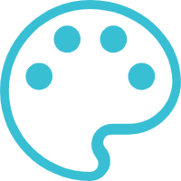

love because of love
Programming is an art.

I have been fond of computers since I was a child, especially logical thinking. When I was in high school, I often lost sleep when doing math problems. Even in my dreams, I was doing math problems. When I went to college, I often took computer classes in other classes. Self-taught, I learned a lot of complicated things, not systematic, but because of my love for computers, I got a better job in my career, and I like it because of my love.
Continue reading
advanced learning
Think more and practice more.
The first thing to say is that the learning of technology is a process of accumulation over time, from quantitative change to qualitative change. There is no way to make you become a big cow in a short period of time. The so-called step to the sky is reserved for those legendary geniuses, but geniuses After all, it is only a very small number of people. Most of the Daniel still rely on perseverance and perseverance, crowned with correct learning methods, and through continuous efforts, continuous learning, and spending a lot of energy to achieve their current achievements. So, when you read through the official documents, you actually only took a small step. To become a real big cow, you still need to work hard in your subsequent studies..
Continue reading